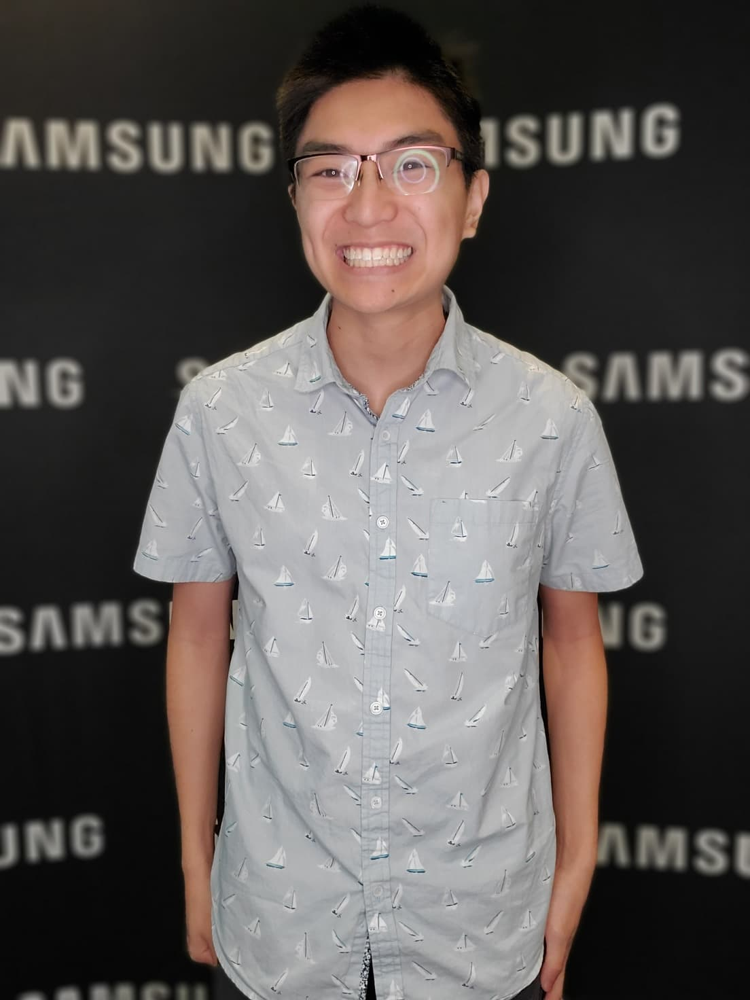

Brian Chu
 This edition’s star of Humans of ICS is Brian Chu!
We hope you enjoy reading about Brian and his passion for AI, hobbies of making viral memes on Zotmeme and what he’s been doing during quarantine!
Year: 2nd Major: Computer Science
Iqra: Hello, everyone! For today's segment of Humans of ICS, we have Brian Chu. Can you start off by introducing yourself: your name, your year, and your major?
Brian: Yes. I'm Brian Chu. I am a 2nd year Computer Science major.
I: And why did you choose CS as your major?
B: Personally, I chose CS because I thought that solving problems and working on algorithms was kind of cool. And also in high school, I was originally planning on being in Mechanical Engineering or something related to that. But then, I got into this thing called NACLO, which is the North American Computational Linguistics Olympiad. I realized that I like the techniques that I used to solve problems in it and it was really interesting and I wanted to learn more about them.
I: That's awesome. All right, so what are you passionate about and where did you develop that passion?
B: It’s a bit hard to say what I'm passionate about actually, just because it varies a lot and there's just a lot of things that I really do. But, I guess what I'd say I'm passionate about it specifically is working on stuff with languages and natural language processing, like AI, but also computer programming languages too, like language development stuff.
I: Nice! And what's one piece of advice you would give yourself before coming to UCI?
B: I guess one thing I would say to myself is just to definitely reach out more and socialize and make new friends just because it definitely helps a lot to have that kind of support structure when you need it, especially with the hard classes and stuff like that. Yeah.
I: Yeah, I completely agree! It’s really important to have a group of friends you can rely on in difficult CS classes. And where do you see yourself in five years?
B: Currently I'm planning on applying for graduate school, so hopefully in five years I'll be off doing research somewhere.
I: What do you want to do research in?
B: I'm interested in doing research in AI. And actually as a matter of fact, I am currently researching in AI. So I'm actually working on this really cool project where we're trying to model the actual human brain using a neural network.
I: Wow! Under what professor?
B: Under professor Emre Neftci in an NMI lab, which is a Neuromorphic Machine Intelligence Lab.
I: Impressive! So, now we're going to be moving on to the personalized questions. So I saw on the interest form, you talked a few times about your experience being a DJ for KUCI. Can you tell us more about how you got involved? What do you do and why do you like it?
B: Oh yes. Basically, I actually got involved last year in winter quarter when I started doing the training class. And ever since then, I've just been with KUCI as a DJ. You know, I play music and I do a little back announcing here and there and just kinda say what songs I like. It's pretty interesting and the reason why I got into it in the first place is because I also really enjoy listening to music and being a DJ gives you the opportunity to spend two hours a week just yourself in the station listening to music and just kind of vibing.
I: What are your favorite artists?
B: Ooh, uh, there's like, there's so many artists that it's really hard to pick just one. But I guess if you like, I guess if I had to pick one that I've listened to recently, it would probably be something like Zombie-Chang or Aseul. Anything really electropop.
I: Nice! I also saw that you talked about one of your accomplishments getting a few hundred likes on Zotmeme. And I noticed that you post on there a lot! So, when did you start making memes about UCI? What's been your favorite posts that you've made so far and now what's your highest liked meme?
B: I think my favorite post recently, it was actually this one where I took the covers of those O'Reilly programming books, like you know those for intro. to Python with the animals on the cover. So basically what I did is I actually found all the books that had anteaters on the covers and I basically replaced them with UCI specific titles. Like “How to Write Bots to Crash Webreg” or “How to Write Really Short 1-Liner Python Programs.”
I: Hahah! And how many likes did you get on your most liked meme?
B: My most liked meme was actually this one where it was like “Treat yourself like University Drive and never stop working on yourself, no matter how much it inconveniences everyone else.” So I actually, I stole it from a separate page, but anyways, I actually got like roughly 1200 likes!
I: Dang! So, why do you make UCI memes?
B: Well for me it's more as a way to blow off steam and kind of entertain myself. When I have a bunch of work and I’m really stressed out, sometimes I'll just, you know, come up with a really funny meme idea and I’ll just post it! That’s one of my coping strategies.
I: That's great. And I saw that you're very extra about your operating system. Can you tell us more about Fedora and why you use it?
B: Oh yeah! I transitioned to using Fedora because my other laptop broke and I'm using it as a back up. In terms of Linux, I really enjoy using it just ‘cause I like tinkering with a lot of the settings features on it. 'm pretty sure if someone else were to try using my computer, they probably wouldn't be able to just ‘cause it's not Windows.
I: That makes sense! And since we're all under quarantine, what have you been doing to pass your time and what will be the first thing that you do once quarantine is over?
B: To pass the time besides the regular school work, I've also been teaching myself various skills. For example, I got through almost 50 problems on Project Euler using nothing but various dialects of Lisp, like Common Lisp. I've also been messing around with some other projects with the Raspberry Pi. I've just been getting stuff set up that's cool.
I: And what will be the first thing that you do once quarantine is over?
B: Uh, the first thing that I would do is probably go hang out with friends, like in person as opposed to over the Zoom or Discord just ‘cause it's been a while since I've seen any of them face to face, so I'm really looking forward to that.
I: Yeah, same here! And for our last segment, we're going to have a rapid fire question. So I'll say like this or that and you'll choose one option or the other.
I: So pineapple on pizza, yay or nay? B: Yes. Pineapple on pizza is pretty good.
I: Mountains or the beach? B: The beach.
I: Dogs or cats? B: Cats.
I: Netflix or YouTube? B: Netflix.
I: Facebook or Twitter? B: Neither.
I: iOS or Android? B: Android.
I: Cake or pie? B: Cake
I: Burger or hotdog? B: Burger.
I: Coffee or tea? B: Tea.
I: Winter or summer? B: Winter.
I: And that concludes our interview. Thank you, Brian!
Thanks to Brian for being a part of Humans of ICS and thank you for reading this edition of Humans of ICS! Follow Brian on Instagram @the_brian_sea us on Instagram @icssc.uci! Nominate yourself or your friends for Humans of ICS using the form at https://tinyurl.com/ICSSCxHumansOfICS. See you next time!